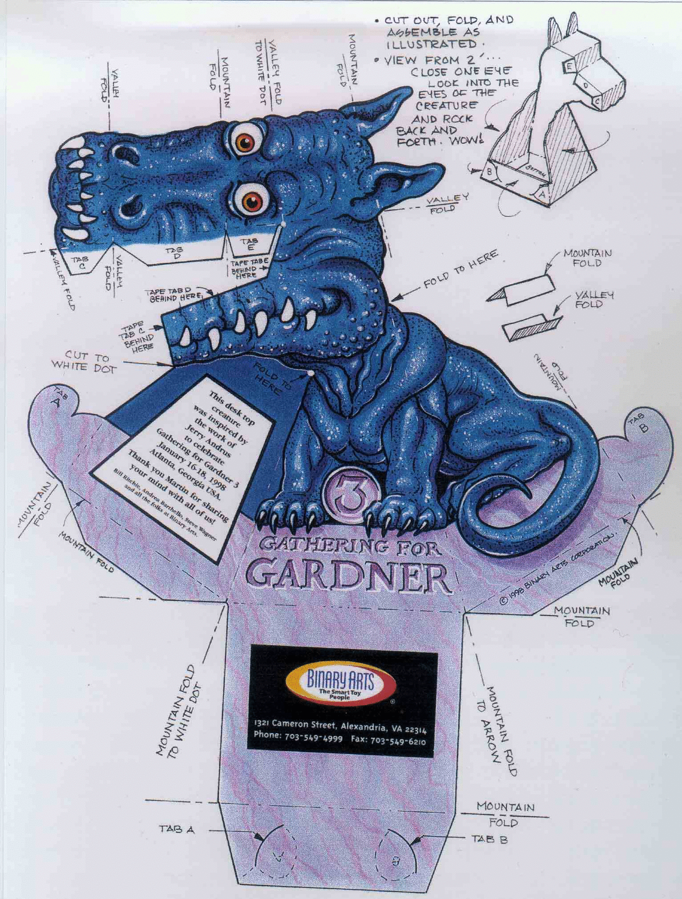

There are five labs for you to carry out. The labsheets are here:
Remember that I use the PGM (Portable Gray Map) format as it is one of the simplest methods for image representations, and is lossless. ("It's so simple that most people will simply reverse engineer it because it's easier than reading this specification" - Jef Poskanzer - pgm man page).
There are plenty of utilities in the lab classroom under Unix/Linux for displaying PGM images (e.g. xv, gimp).
If you want to do some of the labs or coursework using Windows then you may want to convert some images to another format if you don't have facilities for viewing on Windows. You can use the Unix/Linux image display tools or Unix/Linux command line utilities such as ppmtogif.
In case you want to write your programs in C then here is some C code to help you read and write PGM and PPMs.
Here some short example programs (mostly translated from C to Java) to help you understand some of the algorithms I cover in the module:
The following is a nice "cut and paste" exercise (with paper and glue!) that
demonstrates the perceptual illusion of depth inversion.
Print it out and get cutting...
